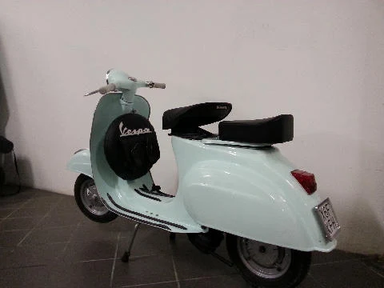
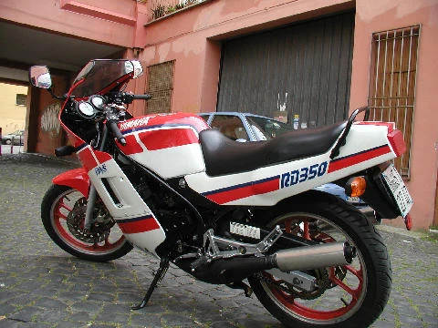

Restauro completo
Ducati 250 Mach 1
Arrivata ferma da anni, con il motore da aprire e la vernice andata via a pezzi. È tornata in strada come stava di serie, con i suoi ricambi dove c'erano ancora.
Com'era arrivata
Una Mach 1 che aveva passato troppi anni sotto un telo. Il motore girava a fatica, l'impianto elettrico era da rifare da capo, la vernice se ne era andata a pezzi e la ruggine aveva cominciato il suo lavoro.
La base però era sana, e su una moto così è quello che conta davvero: se il telaio e i carter sono buoni, tutto il resto si recupera. Si è smontata pezzo per pezzo, e ogni pezzo è stato messo da parte e guardato uno alla volta.
Il motore
Il monocilindrico è stato aperto tutto e rifatto pezzo per pezzo, tenendo i ricambi originali dovunque fossero ancora in tolleranza. Rimettere tutto nuovo è più veloce, ma a una moto di questa età toglie quello che è.
I cuscinetti invece sono stati sostituiti tutti, senza eccezioni. Dopo anni di fermo sono la prima cosa che cede, e non ha senso rimontare un motore intorno a un cuscinetto stanco per poi riaprirlo dopo mille chilometri.
Il colore
La verniciatura è rosso rame. Serbatoio e parafanghi sono stati portati al metallo e rifatti da zero, non ripassati sopra alla vecchia mano di vernice, perché altrimenti dopo un anno si vede.
Cromature, fanale e strumentazione sono stati rimessi a posto insieme al resto. Il risultato deve sembrare una moto tenuta bene, non una moto rifatta ieri.
Com'è finita
Rimessa in strada, non da museo. Si accende a pedale, cammina, e fa il rumore che deve fare una Ducati di quegli anni. Il resto lo lasciamo dire alle foto.
Scheda tecnica
Ducati 250 Mach 1
| Motore | Monocilindrico verticale 4 tempi |
|---|---|
| Cilindrata | 248,5 cc |
| Alesaggio per corsa | 74 x 57,8 mm |
| Rapporto di compressione | 10:1 |
| Alimentazione | Carburatore Dell'Orto SS 29 |
| Raffreddamento | Ad aria |
| Avviamento | A pedale |
| Potenza | 24 CV a 8500 giri |
| Cambio | 5 marce |
| Frizione | Multidisco |
| Trasmissione finale | A catena |
| Peso a vuoto | 116 kg |
| Velocità massima | 170 km/h |
Altre moto uscite da qui


Hai una moto ferma in garage?
Mandaci due foto e ti diciamo se si recupera e cosa comporta.
I restauri si fanno su appuntamento. Passa in officina con la moto oppure scrivici prima su WhatsApp, così ci organizziamo.